The persistent fundamental group of clouds
XIMENA FERNANDEZ
Durham University
UK CENTRE FOR TOPOLOGICAL DATA ANALYSIS
$11^{th}$ International Conference on Geometric and Topological Methods in Computer Science
Joint work with Kevin Piterman
Topological inference
Topological inference
Let $\mathbb{X}_n$ be a (possible noisy) finite sample of an unknown topological space $\mathcal X$.
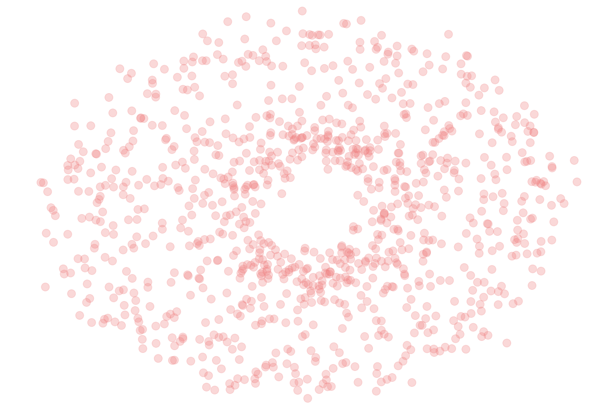Topological inference
Let $\mathbb{X}_n$ be a (possible noisy) finite sample of an unknown topological space $\mathcal X$.
Goal: Describe (algorithmic) tools to infer topological properties of $\mathcal{X}$ from $\mathbb{X}_n$.
Persistence
- Metric space $(\mathbb{X}_n,d)$
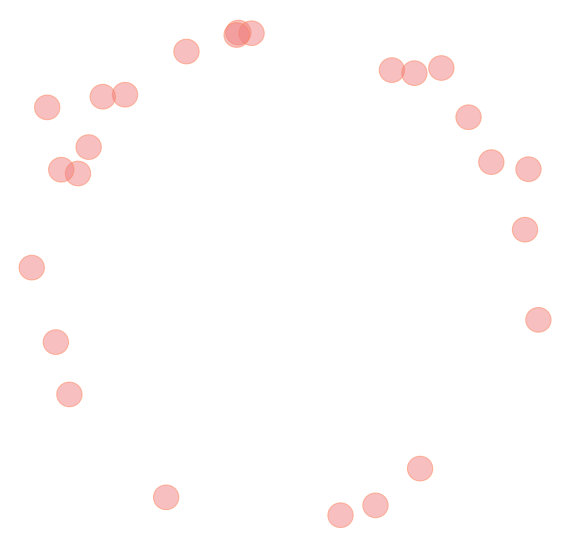
Persistence
- Metric space $(\mathbb{X}_n,d)$
- Filtration of complexes \[K_1 \xrightarrow{i_1} K_2 \xrightarrow{i_2} \dots \xrightarrow{i_{N-1}} K_N\]
 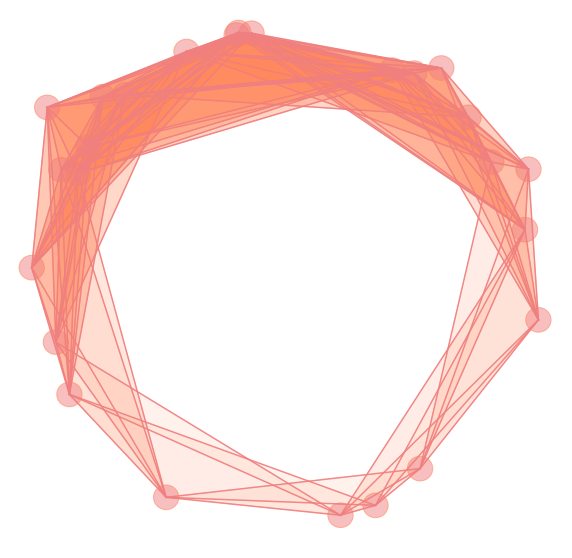
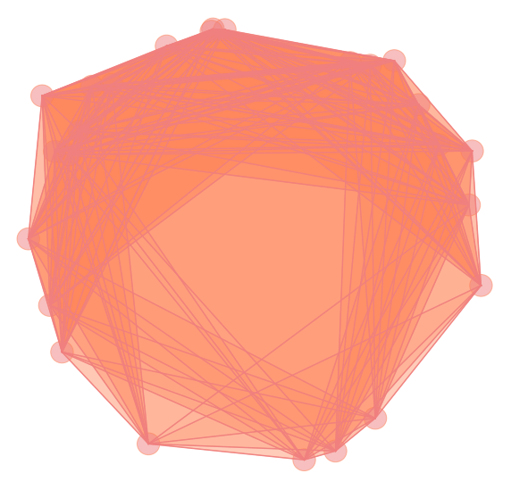
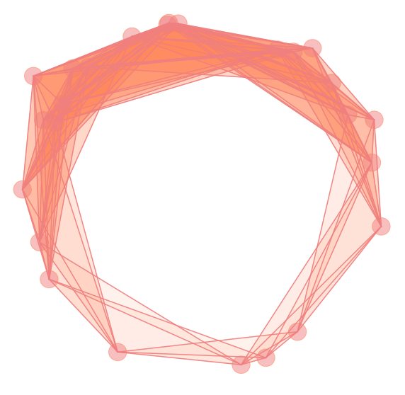
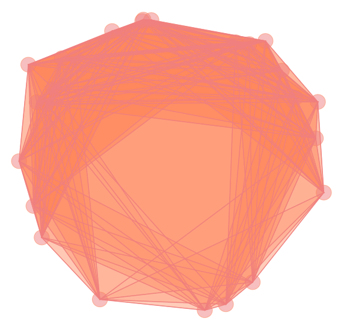
Persistence
- Metric space $(\mathbb{X}_n,d)$
- Filtration of complexes \[K_1 \xrightarrow{i_1} K_2 \xrightarrow{i_2} \dots \xrightarrow{i_{N-1}} K_N\]
- Apply a topological invariant $F$ \[F(K_1) \xrightarrow{(i_1)_*} F(K_2) \xrightarrow{(i_2)_*} \dots \xrightarrow{(i_{N-1})_*} F(K_N)\]
Persistence
- Metric space $(\mathbb{X}_n,d)$
- Filtration of complexes \[K_1 \xrightarrow{i_1} K_2 \xrightarrow{i_2} \dots \xrightarrow{i_{N-1}} K_N\]
- Apply a topological invariant $F$ \[F(K_1) \xrightarrow{(i_1)_*} F(K_2) \xrightarrow{(i_2)_*} \dots \xrightarrow{(i_{N-1})_*} F(K_N)\]
- For every $i < j$, there exist a homomorphism $f_{i,j}:F(K_i) \to F(K_j)$ and the persistent invariant is defined as \[F^{i\rightarrow j} := \mathrm{Im}(f_{i,j})\]
Persistent homology
- Metric space $(\mathbb{X}_n,d)$
- Filtration of complexes \[K_1 \xrightarrow{i_1} K_2 \xrightarrow{i_2} \dots \xrightarrow{i_{N-1}} K_N\]
- Apply $H_d(\bullet)$ \[H_d(K_1) \xrightarrow{(i_1)_*} H_d(K_2) \xrightarrow{(i_2)_*} \dots \xrightarrow{(i_{N-1})_*} H_d(K_N)\]
- For every $i < j$, there exist a homomorphism $f_{i,j}:H_d(K_i) \to H_d(K_j)$ and the persistent homology is defined as \[H_d^{i\rightarrow j} := \mathrm{Im}(f_{i,j})\]
Persistent homology
- Metric space $(\mathbb{X}_n,d)$
- Filtration of complexes \[K_1 \xrightarrow{i_1} K_2 \xrightarrow{i_2} \dots \xrightarrow{i_{N-1}} K_N\]
- The invariant $F = H_d(\bullet, k)$ with $k$ a field induces a persistence module defined as \[M_d = \bigoplus_{i\geq 0} H_d(K_i)\]
Theorem (Zomorodian & Carlsson, 2005). For every degree $d\geq 0$, there is a decomposition $$M_d = \left( \bigoplus_{s=1}^n \Sigma^{\alpha_s} k[x]\right) \oplus \left(\bigoplus_{l=1}^m \Sigma^{\gamma_l}k[x]/x^{n_l}k[x]\right)$$ where $\alpha_s, \gamma_j\in \mathbb{Z}$, $n_l< n_{l+1}$ y $\Sigma^{\alpha}$ denotes an $\alpha$-shift in the degree.
We can represent $M_d$ as a set of intervals $(\alpha_s, + \infty)$ and $(\gamma_l,\gamma_l+n_l)$, also known as barcode.
Persistent homology
- Metric space $(\mathbb{X}_n,d)$
- Filtration of complexes \[K_1 \xrightarrow{i_1} K_2 \xrightarrow{i_2} \dots \xrightarrow{i_{N-1}} K_N\]
- The invariant $F = H_d(\bullet, k)$ with $k$ a field induces a persistence module defined as \[M_d = \bigoplus_{i\geq 0} H_d(K_i)\]
- The algorithm to compute the interval decomposition of $M_d$ reduces to the computation of homology of $K_N$ seen as a filtered complex (based on matrix normal reduction).
- The complexity of the computation of the persistent homology at degree $d$ is $$O(M^3)$$ with $M$ the number of $(d+1)$ simplices in $K_N$.
Example
$S^2\vee S^1\vee S^1$
- Point cloud $\mathbb{X}_n$
Example
$S^2\vee S^1\vee S^1$
- Point cloud $\mathbb{X}_n$
- Vietoris–Rips filtration $\mathrm{VR}_{\alpha}(\mathbb{X}_n)$

Example
$S^2\vee S^1\vee S^1$
- Point cloud $\mathbb{X}_n$
- Vietoris–Rips filtration $\mathrm{VR}_{\alpha}(\mathbb{X}_n)$
- Persistent Homology
Example
$S^1\times S^1$ vs $S^2\vee S^1\vee S^1$

Example
$S^2\vee S^1\vee S^1$ vs $S^1\times S^1$
Vietoris–Rips filtration
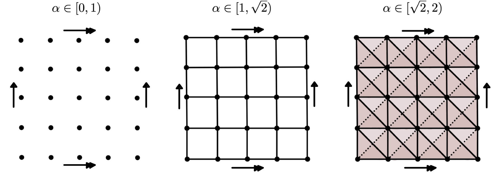
Persistent homology
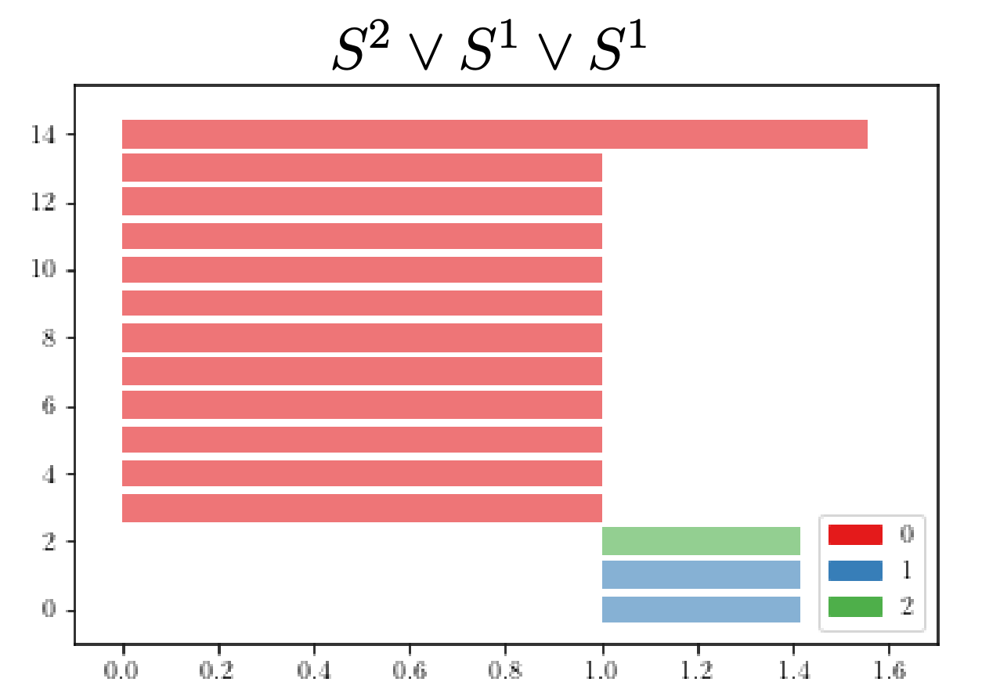
The persistent fundamental group
The persistent fundamental group
- Metric space $(\mathbb{X}_n,d)$
- Filtration of (connected) complexes \[K_1 \xrightarrow{i_1} K_2 \xrightarrow{i_2} \dots \xrightarrow{i_{N-1}} K_N\]
- Persistent fundamental group \[\pi_1(K_1) \xrightarrow{(i_1)_*} \pi_1(K_2) \xrightarrow{(i_2)_*} \dots \xrightarrow{(i_{N-1})_*} \pi_1(K_N)\]
- Algorithm?
CW-complexes of dim 2
$K$

Group presentations
$\mathcal{P}_K = \langle x_4, x_6, x_7, x_8, x_9, x_{10}, x_{11}, x_{12}, x_{13}~ | \\~ ~ ~ ~ ~ ~ ~ ~ ~ ~x_{13}, x_{13}^{-1}x_{12}x_4^{-1},x_{12}^{-1}x_{11}, x_{11}^{-1}x_{10}x_6^{-1}, \\ ~ ~ ~ ~ ~ ~ ~ ~ ~ ~x_{10}^{-1}x_9x_4, x_9^{-1}x_8, x_8^{-1}x_7x_6, x_7^{-1}\rangle $
The persistent fundamental group
- Metric space $(\mathbb{X}_n,d)$
- Filtration of (connected) complexes \[K_1 \xrightarrow{i_1} K_2 \xrightarrow{i_2} \dots \xrightarrow{i_{N-1}} K_N\]
- Spanning tree $T$ on $K_1$ (and hence, on $K_i ~\forall i\geq 0$).
- Persistent group presentation \[\mathcal{P}_{K_1} \xrightarrow{(i_1)_*} \mathcal{P}_{K_2} \xrightarrow{(i_2)_*} \dots \xrightarrow{(i_{N-1})_*} \mathcal{P}_{K_N}\]
The persistent fundamental group
- Persistent group presentation \[\mathcal{P}_{K_1} \xrightarrow{(i_1)_*} \mathcal{P}_{K_2} \xrightarrow{(i_2)_*} \dots \xrightarrow{(i_{N-1})_*} \mathcal{P}_{K_N}\]
where \[\mathcal{P}_{K_N} = \langle x_1, x_2, \dots, x_n ~ | ~ r_1, r_2, \dots, r_m\rangle\] with $X_N = \{x_1, x_2, \dots x_n\}$ the set of the 1-cells in $K_N$ not in $T$, and $R_N = \{r_1, r_2, \dots, r_m\}$ the set of relators associated to the attaching maps of the 2-cells in $K_N$.
For $0\leq j \leq N$, \[\mathcal{P}_{K_j} = \langle x_{j_1}, x_{j_2}, \dots, x_{j_{n_j}} ~ | ~ r_{j_1}, r_{j_2}, \dots, r_{j_{m_j}}\rangle\] with $X_i = \{x_{j_1}, x_{ij2}, \dots, x_{j_{n_i}}\}$ the set of the 1-cells in $K_j$ not in $T$ and $R_j = \{r_{j_1}, r_{j_2}, \dots, r_{j_{m_j}}\}$ the set of relators associated to the attaching maps of the 2-cells in $K_j$.
The homomorphisms $(i_j)_*$ are induced by the inclusions $X_j\subseteq X_{j+1}$, $R_j\subseteq R_{j+1}$.
Problem: In practice, the presentations $\mathcal{P}_{K_j}$ may be huge.
Discrete Morse Theory
$\bullet$ Ximena Fernandez, Morse theory for group presentations (2021) arXiv:1912.00115
Discrete Morse Theory
Goal: 'Simplify' the cell decomposition of a CW-complex while preserving its homotopy type.
- $K$ a regular CW-complex.

Discrete Morse Theory
Goal: 'Simplify' the cell decomposition of a CW-complex while preserving its homotopy type.
- $K$ a regular CW-complex.
- $f:K\to \mathbb{R}$ a discrete Morse function.
For every cell $e^n$ in $K$, $\#\{e^n\succ e^{n-1}: f(e^n)\leq f(e^{n-1})\}\leq 1 \text{ and } \#\{e^n\prec e^{n+1} : f(e^n)\geq f(e^{n+1})\}\leq 1.$

Discrete Morse Theory
Goal: 'Simplify' the cell decomposition of a CW-complex while preserving its homotopy type.
- $K$ a regular CW-complex.
- $f:K\to \mathbb{R}$ a discrete Morse function.
- $C$ the set of critical cells of $K$.
An $n$-cell $e^n \in K$ is a critical cell of index $n$ if the values of $f$ in every face and coface of $e^n$ increase with dimension.

Discrete Morse Theory
Goal: 'Simplify' the cell decomposition of a CW-complex while preserving its homotopy type.
- $K$ a regular CW-complex.
- $f:K\to \mathbb{R}$ a discrete Morse function.
- $C$ the set of critical cells of $K$.
Theorem [Forman, '98]. $K$ is homotopy equivalent to a CW-complex $K_\mathcal{M}$ with exactly one cell of dimension $k$ for every critical cell of index $k$. In particular, $\pi_1(K) \cong \pi_1(K_\mathcal{M}).$


Discrete Morse Theory
Goal: 'Simplify' the cell decomposition of a CW-complex while preserving its homotopy type.
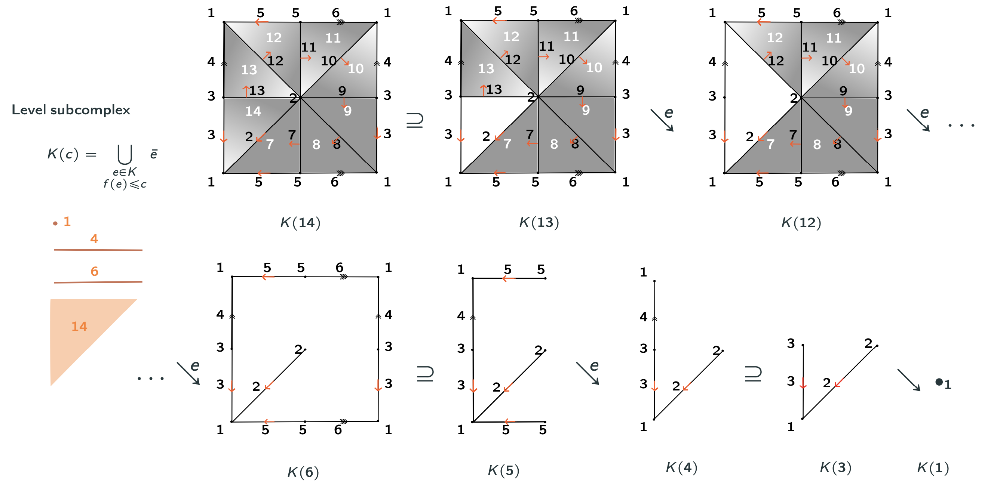Discrete Morse Theory & Whitehead deformations
Lemma (Internal collapse): Let $K$ be a CW-complex of dimension $\leq n$. Let $\varphi:\partial D^n\to K$ be the attaching map of an $n$-cell $e^n$. If $K \searrow L$, then \[K\cup e^n \nearrow\hspace{-1.5 pt} \searrow\hspace{-8pt}^{^{n+1}}L\cup \widetilde{e}^n\] where the attaching map $\widetilde{\varphi}\colon \partial D^ n\to L$ of $\widetilde{e}^n$ is defined as $\widetilde{\varphi}=r \varphi$ with $r:K\to L$ the canonical strong deformation retract induced by the collapse $K \searrow L$.
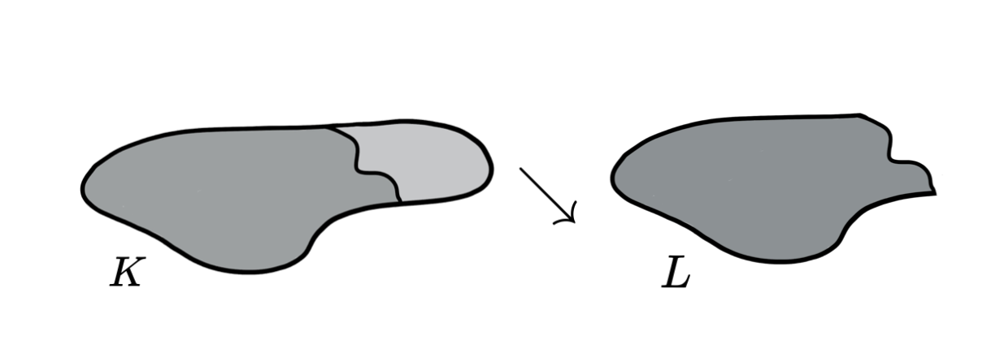Discrete Morse Theory & Whitehead deformations
Lemma (Internal collapse): Let $K$ be a CW-complex of dimension $\leq n$. Let $\varphi:\partial D^n\to K$ be the attaching map of an $n$-cell $e^n$. If $K \searrow L$, then \[K\cup e^n \nearrow\hspace{-1.5 pt} \searrow\hspace{-8pt}^{^{n+1}}L\cup \widetilde{e}^n\] where the attaching map $\widetilde{\varphi}\colon \partial D^ n\to L$ of $\widetilde{e}^n$ is defined as $\widetilde{\varphi}=r \varphi$ with $r:K\to L$ the canonical strong deformation retract induced by the collapse $K \searrow L$.

Discrete Morse Theory & Whitehead deformations
Lemma (Internal collapse): Let $K$ be a CW-complex of dimension $\leq n$. Let $\varphi:\partial D^n\to K$ be the attaching map of an $n$-cell $e^n$. If $K \searrow L$, then \[K\cup e^n \nearrow\hspace{-1.5 pt} \searrow\hspace{-8pt}^{^{n+1}}L\cup \widetilde{e}^n\] where the attaching map $\widetilde{\varphi}\colon \partial D^ n\to L$ of $\widetilde{e}^n$ is defined as $\widetilde{\varphi}=r \varphi$ with $r:K\to L$ the canonical strong deformation retract induced by the collapse $K \searrow L$.

Discrete Morse Theory & Whitehead deformations
Lemma (Internal collapse): Let $K$ be a CW-complex of dimension $\leq n$. Let $\varphi:\partial D^n\to K$ be the attaching map of an $n$-cell $e^n$. If $K \searrow L$, then \[K\cup e^n \nearrow\hspace{-1.5 pt} \searrow\hspace{-8pt}^{^{n+1}}L\cup \widetilde{e}^n\] where the attaching map $\widetilde{\varphi}\colon \partial D^ n\to L$ of $\widetilde{e}^n$ is defined as $\widetilde{\varphi}=r \varphi$ with $r:K\to L$ the canonical strong deformation retract induced by the collapse $K \searrow L$.

Discrete Morse Theory & Whitehead deformations
Lemma (Internal collapse): Let $K$ be a CW-complex of dimension $\leq n$. Let $\varphi:\partial D^n\to K$ be the attaching map of an $n$-cell $e^n$. If $K \searrow L$, then \[K\cup e^n \nearrow\hspace{-1.5 pt} \searrow\hspace{-8pt}^{^{n+1}}L\cup \widetilde{e}^n\] where the attaching map $\widetilde{\varphi}\colon \partial D^ n\to L$ of $\widetilde{e}^n$ is defined as $\widetilde{\varphi}=r \varphi$ with $r:K\to L$ the canonical strong deformation retract induced by the collapse $K \searrow L$.

Discrete Morse Theory & Whitehead deformations
Lemma (Internal collapse): Let $K$ be a CW-complex of dimension $\leq n$. Let $\varphi:\partial D^n\to K$ be the attaching map of an $n$-cell $e^n$. If $K \searrow L$, then \[K\cup e^n \nearrow\hspace{-1.5 pt} \searrow\hspace{-8pt}^{^{n+1}}L\cup \widetilde{e}^n\] where the attaching map $\widetilde{\varphi}\colon \partial D^ n\to L$ of $\widetilde{e}^n$ is defined as $\widetilde{\varphi}=r \varphi$ with $r:K\to L$ the canonical strong deformation retract induced by the collapse $K \searrow L$.

Discrete Morse Theory & Whitehead deformations
Proposition: Let $ \displaystyle K \cup \bigcup_{i=1}^d e_i$ be a CW-complex where
$\dim (K) \leq \dim (e_{i})\leq \dim (e_{i+1})\leq n$ for all $i=1, 2, \dots, d$.
Let $\displaystyle \varphi_j:\partial D_j\to K\cup \bigcup_{i < j} e_i$ be the attaching map of $e_j$.
If $K\searrow L$, then there exist CW-complexes $Z_1\leq Z_2\leq \dots \leq Z_d$ of dim $\leq n+1$ such that for every $j=1, 2, \dots, d,$
\[K\cup \bigcup_{i=1}^j e_i \nearrow Z_j \searrow L\cup
\bigcup_{i=1}^j \widetilde e_i\] where the attaching map
$\displaystyle \widetilde \varphi_j:\partial D_j\to L\cup \bigcup_{i< j}
\widetilde e_i$ of the cell $\widetilde e_j$ is defined inductively as:
$\bullet ~~\displaystyle \widetilde \varphi_1=r_0\varphi_1$ with $r_0:K\to L$ the canonical strong deformation retract and for $j>1$,
$\bullet ~~\widetilde \varphi_{j}=\widetilde r_{j-1}\imath_{j-1}\varphi_{j}$ where $ \widetilde r_{j-1}:Z_{j-1}\to L\cup \bigcup_{i< j} \widetilde e_i$ is the strong deformation retract and $\imath_{j-1}: K\cup \bigcup_{i< j} e_i \to Z_{j-1}$ is the inclusion.
Discrete Morse Theory & Whitehead deformations
Theorem [F. 2021]: Let $K$ be a regular CW-complex of dim $n$ and let $f:K\to \mathbb{R}$ be discrete Morse function. Then, $f$ induces a sequence of internal collapses given by a filtration of $K$ \[ \varnothing = K_{-1} \subseteq L_0 \subseteq K_0\subseteq L_1\subseteq K_1 \dots \subseteq L_{N}\subseteq K_{N}=K\] such that $K_j\searrow L_{j}$ for all $1\leq j\leq N$ and $\displaystyle L_{j}=K_{j-1}\cup \bigcup_{i=1}^{d_j} e_i^j$ with $\{e_i^j:0\leq j\leq N, 1\leq i \leq d_j\}$ the set of critical cells of $f$. Moreover, \[ K \nearrow\hspace{-1.5 pt} \searrow\hspace{-8pt}^{^{n+1}} L_0\cup \bigcup_{j=1}^{N} \bigcup_{i=1}^{d_j}\widetilde e_i^j = K_\mathcal{M}.\] Here, the attaching maps of the cells $\widetilde e_i^j$ can be explicitly reconstructed from the internal collapses.
Discrete Morse Theory & Whitehead deformations

CW-complexes of dim 2
$K$
Group presentations
$\mathcal{P}_K = \langle x_4, x_6, x_7, x_8, x_9, x_{10}, x_{11}, x_{12}, x_{13}~ | \\~ ~ ~ ~ ~ ~ ~ ~ ~ ~x_{13}, x_{13}^{-1}x_{12}x_4^{-1},x_{12}^{-1}x_{11}, x_{11}^{-1}x_{10}x_6^{-1}, \\ ~ ~ ~ ~ ~ ~ ~ ~ ~ ~x_{10}^{-1}x_9x_4, x_9^{-1}x_8, x_8^{-1}x_7x_6, x_7^{-1}\rangle $
$K$
$\mathcal{P}_K = \langle x_4, x_6, x_7, x_8, x_9, x_{10}, x_{11}, x_{12}, x_{13}~ | \\~ ~ ~ ~ ~ ~ ~ ~ ~ ~x_{13}, x_{13}^{-1}x_{12}x_4^{-1},x_{12}^{-1}x_{11}, x_{11}^{-1}x_{10}x_6^{-1}, \\ ~ ~ ~ ~ ~ ~ ~ ~ ~ ~x_{10}^{-1}x_9x_4, x_9^{-1}x_8, x_8^{-1}x_7x_6, x_7^{-1}\rangle $
$K + f\colon K\to \mathbb{R}$ Morse function
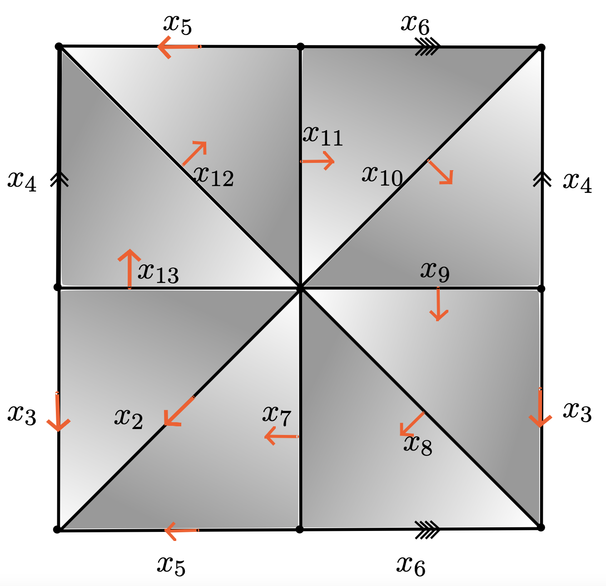$\mathcal{P}_{K_{\mathcal{M}}} = \langle x_4, x_6~ | ~ x_6x_4x_6^{-1}x_4^{-1}\rangle $
Morse theory for group presentations
Given $K$ a regular CW-complex of dim 2 and $f\colon K\to \mathbb{R}$ a discrete Morse function with a single critical 0-cell, we developed an algorithmic description of the Morse presentation $\mathcal{P}_{K_{\mathcal M}}$.
Morse theory for group presentations
Given $K$ a regular CW-complex of dim 2 and $f\colon K\to \mathbb{R}$ a discrete Morse function with a single critical 0-cell, we developed an algorithmic description of the Morse presentation $\mathcal{P}_{K_{\mathcal M}}$.
- Every Morse function determines a matching on the set of cells of $K$.
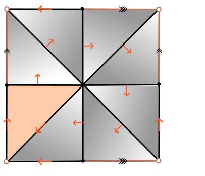
Morse theory for group presentations
Given $K$ a regular CW-complex of dim 2 and $f\colon K\to \mathbb{R}$ a discrete Morse function with a single critical 0-cell, we developed an algorithmic description of the Morse presentation $\mathcal{P}_{K_{\mathcal M}}$.
- Every Morse function determines a matching on the set of cells of $K$.
- A Morse function with a single critical 0-cell determines a spanning tree on $K^{(1)}$.

Morse theory for group presentations
Given $K$ a regular CW-complex of dim 2 and $f\colon K\to \mathbb{R}$ a discrete Morse function with a single critical 0-cell, we developed an algorithmic description of the Morse presentation $\mathcal{P}_{K_{\mathcal M}}$.
- Every Morse function determines a matching on the set of cells of $K$.
- A Morse function with a single critical 0-cell determines a spanning tree on $K^{(1)}$.
- The internal collapse induced by every pair of matched cells $(x,e)$ of dim 1 and 2 determines a rewriting in the attaching map of every 2 cell.
Given a relator $r=w_1x^{\epsilon}w_2$ and a generator $x$ that appears neither in $w_1$ nor in $w_2$ and $\epsilon=\pm 1$, the equivalent expression $\omega(x,r)$ of $x$ induced by $r$ is defined as $(w_1^{-1}w_2^{-1})^{\epsilon}$.
Morse theory for group presentations
Definition [F.2021] Let $K$ be a regular CW-complex. Let $f:K\to \mathbb{R}$ be a Morse function
with only one critical cell of dimension 0.
Label $M^{(2)}=\{(x_1, e_1), \dots, (x_m, e_m)\}$ the subset of induced matched pairs of cells of dimension 1 and 2.
The Morse presentation $\mathcal{Q}_{K,f}$ is the presentation $\mathcal Q_m$ defined by the following iterative procedure:
$\bullet$ $\mathcal Q_0$ is the standard presentation $ \mathcal P_K$ constructed using
the spanning tree $T$ induced by $M^{(1)}$, the induced matched pairs of cells of dimension 0 and 1.
$\bullet$ For $0\leq i < m$, let $\mathcal Q_{i+1}$ be the presentation obtained from $\mathcal Q_{i}$ after removing the relator $r_i$ associated to $e_i$ and the generator $x_i$, and applying the rewriting rule on every occurrence of the generator $x_i$ in the rest of the relators.
Theorem [F.2021] $\mathcal Q_{K,f}$ is is the standard presentation $\mathcal P_{K_\mathcal M}$.
Morse theory for group presentations
$~O(M^2)$ with $M$ = |2-cells of $K$|
ximenafernandez/Finite-Topological-Spaces (SAGE)

Example
$\mathcal{Q}_0 = \langle x_4, x_6, x_7, x_8, x_9, x_{10}, x_{11}, x_{12}, x_{13}~ | ~ x_{13}, x_{13}^{-1}x_{12}x_4^{-1},x_{12}^{-1}x_{11}, x_{11}^{-1}x_{10}x_6^{-1}, x_{10}^{-1}x_9x_4, x_9^{-1}x_8, x_8^{-1}x_7x_6, x_7^{-1}\rangle $
$\omega_0 (x_{13}, x_{13}^{-1}x_{12}x_4^{-1}) = x_{12}x_4^{-1}$
Example
$\mathcal{Q}_0 = \langle x_4, x_6, x_7, x_8, x_9, x_{10}, x_{11}, x_{12}, x_{13}~ | ~ x_{13}, x_{13}^{-1}x_{12}x_4^{-1},x_{12}^{-1}x_{11}, x_{11}^{-1}x_{10}x_6^{-1}, x_{10}^{-1}x_9x_4, x_9^{-1}x_8, x_8^{-1}x_7x_6, x_7^{-1}\rangle $
$\omega_0 (x_{13}, x_{13}^{-1}x_{12}x_4^{-1}) = x_{12}x_4^{-1}$
$\mathcal{Q}_1 = \langle x_4, x_6, x_7, x_8, x_9, x_{10}, x_{11}, x_{12} ~ | ~ x_{12}x_4^{-1}, x_{12}^{-1}x_{11}, x_{11}^{-1}x_{10}x_6^{-1}, x_{10}^{-1}x_9x_4, x_9^{-1}x_8, x_8^{-1}x_7x_6, x_7^{-1}\rangle $
$\omega_1 (x_{12}, x_{12}^{-1}x_{12}) = x_{11}$
Example
$\mathcal{Q}_0 = \langle x_4, x_6, x_7, x_8, x_9, x_{10}, x_{11}, x_{12}, x_{13}~ | ~ x_{13}, x_{13}^{-1}x_{12}x_4^{-1},x_{12}^{-1}x_{11}, x_{11}^{-1}x_{10}x_6^{-1}, x_{10}^{-1}x_9x_4, x_9^{-1}x_8, x_8^{-1}x_7x_6, x_7^{-1}\rangle $
$\mathcal{Q}_1 = \langle x_4, x_6, x_7, x_8, x_9, x_{10}, x_{11}, x_{12} ~ | ~ x_{12}x_4^{-1}, x_{12}^{-1}x_{11}, x_{11}^{-1}x_{10}x_6^{-1}, x_{10}^{-1}x_9x_4, x_9^{-1}x_8, x_8^{-1}x_7x_6, x_7^{-1}\rangle $
$\mathcal{Q}_2 = \langle x_4, x_6, x_7, x_8, x_9, x_{10}, x_{11} ~ | ~ x_{11}x_4^{-1}, x_{11}^{-1}x_{10}x_6^{-1}, x_{10}^{-1}x_9x_4, x_9^{-1}x_8, x_8^{-1}x_7x_6, x_7^{-1}\rangle $
$\mathcal{Q}_3 = \langle x_4, x_6, x_7, x_8, x_9, x_{10} ~ | ~ x_{10}x_6^{-1}x_4^{-1}, x_{10}^{-1}x_9x_4, x_9^{-1}x_8, x_8^{-1}x_7x_6, x_7^{-1}\rangle $
$\mathcal{Q}_4 = \langle x_4, x_6, x_7, x_8, x_9 ~ | ~ x_{9}x_4x_6^{-1}x_4^{-1}, x_9^{-1}x_8, x_8^{-1}x_7x_6, x_7^{-1}\rangle $
$\mathcal{Q}_5 = \langle x_4, x_6, x_7, x_8~ | ~ x_{8}x_4x_6^{-1}x_4^{-1}, x_8^{-1}x_7x_6, x_7^{-1}\rangle $
$\mathcal{Q}_6 = \langle x_4, x_6, x_7~ | ~ x_7x_6x_4x_6^{-1}x_4^{-1}, x_7^{-1}\rangle $
$\mathcal{Q}_7 = \langle x_4, x_6~ | ~ x_6x_4x_6^{-1}x_4^{-1}\rangle $
The persistent fundamental group (cont.)
$\bullet$ Ximena Fernandez and Kevin Piterman, The persistent fundamental group of point cloud (2022) (In preparation)
The persistent fundamental group
Morse reduction. Given $f\colon K_N\to \mathbb{R}$ a Morse function \[(K_1)_\mathcal{M} \xrightarrow{?} (K_2)_\mathcal{M} \xrightarrow{?} \dots \xrightarrow{?} (K_N)_\mathcal{M}\]
\[\pi_1((K_1)_\mathcal{M})\xrightarrow{?} \pi_1((K_2)_\mathcal{M}) \xrightarrow{?} \dots \xrightarrow{?}\pi_1((K_N)_\mathcal{M})\]
The persistent fundamental group
- Metric space $(\mathbb{X}_n,d)$
- Filtration (connected) \[K_1 \xrightarrow{i_1} K_2 \xrightarrow{i_2} \dots \xrightarrow{i_{N-1}} K_N\]
- $f\colon K_N\to \mathbb{R}$ a Morse function
- Persistent fundamental group
There exist $g_j: \pi_1((K_j)_\mathcal{M})\to\pi_1((K_{j+1})_\mathcal{M})$ such that \[~~~~~~~~~~\pi_1(K_1) \xrightarrow{(i_1)_*} \pi_1(K_2) \xrightarrow{(i_2)_*} \dots \xrightarrow{(i_{N-1})_*} \pi_1(K_N)\] \[~~~~~~~~~~\cong ~~~~~\circlearrowleft~~~~~\cong ~~~~~\circlearrowleft~~~~~~~~\circlearrowleft~~~~~\cong \] \[~~~~~~~~~~\pi_1((K_1)_\mathcal{M})\xrightarrow{g_1} \pi_1((K_2)_\mathcal{M}) \xrightarrow{g_2} \dots \xrightarrow{g_{N-1}}\pi_1((K_N)_\mathcal{M})\]
The persistent fundamental group
Theorem [F. Piterman 2022]. Let $K$ be a regular CW-complex and let $\phi:K\to \mathbb{R}$ be a filtration such that $K_{\min \phi}$ is connected and contains all the vertices of $K$.
Let $f:K\to \mathbb{R}$ be a Morse function with a single critical cell of dimension 0 such that the induced spanning tree is included in $K_{\min \phi}$.
Define a total ordering $\{(x_1, e_1), (x_2, e_2), \dots, (x_m, e_m)\}$ on the set $M^{(2)}$ of induced matched pairs of cells of dimension 1 and 2, such that if $\phi(e_i)\leq \phi(e_j)$ then $i\leq j$.
Let $\mathcal Q_0, \mathcal Q_1, \dots, \mathcal Q_m$ be the family of presentations associated to $(K,f)$.
$\bullet~~~$ Given
$\alpha\in \mathbb{R}$, define
\[i(\alpha) := \begin{cases}
0 & \text{if } \alpha <\phi(e_i)\text{ for all }1\leq i \leq n\\
\max\{1\leq i\leq n \colon\phi(e_i)\leq \alpha\}&\text{otherwise.}\\\end{cases}\]
Then, \[\mathcal P_{({K_\alpha})_{\mathcal M}} = \langle X(\mathcal Q_{i(\alpha)})\cap K_\alpha ~ | ~ R(\mathcal Q_{i(\alpha)})\cap K_\alpha \rangle.\]
The persistent fundamental group
Theorem [F. Piterman 2022] (cont.)
For $1\leq i \leq m$, denote by $\Omega_i\colon G(\mathcal Q_{i-1}) \to G(\mathcal Q_{i})$ the homomorphism induced by the rewriting rule associated to $x_i$ and $r_i$, defined on the generators as
\[
\Omega_i(x_j) := \begin{cases}
\omega(x_j, r_j) & \text{if }j =i \\
x_j & \text{if }j \neq i \end{cases}
\]
for all $1\leq j \leq m$.
For every
$\bullet~~~$ Given $\alpha \leq \alpha'$, the homomorphism
$\widetilde g_{\alpha, \alpha'}\colon F\left(X(\mathcal Q_{i(\alpha)})\cap K_\alpha\right)
\to F\left(X(\mathcal Q_{i(\alpha')})\cap K_{\alpha'}\right)$
defined by
\[\widetilde g_{\alpha, \alpha'}(x) := \Omega_{i(\alpha')}\circ \dots \circ \Omega_{i(\alpha)+1}\circ \Omega_{i(\alpha)}(x)\]
for all $x\in X(\mathcal Q_{i(\alpha)})\cap K_\alpha$
induces a homomorphism $g_{\alpha, \alpha'}\colon \pi_1((K_\alpha)_{\mathcal M}) \to \pi_1((K_{\alpha'})_{\mathcal M} $.
Moreover, the following diagram commutes
\[~~~~~~~~~~\pi_1(K_{\alpha}) \xrightarrow{f_{\alpha, \alpha'}} \pi_1(K_{\alpha'})\]
\[~~~~~~~~~\varphi_{\alpha}\downarrow ~~~~~\circlearrowleft~~~~~\downarrow \varphi_{\alpha'}\]
\[~~~~~~~~~~\pi_1((K_{\alpha})_\mathcal{M})\xrightarrow{g_{\alpha, \alpha'}} \pi_1((K_{\alpha'})_\mathcal{M}) \]
where $\varphi_{\alpha}:\mathcal P_{K_\alpha} \to \mathcal P_{(K_\alpha)_{\mathcal M}}$ is the isomorphism defined as $\varphi_{\alpha}(x) := \Omega_m\circ \dots \circ \Omega_2\circ \Omega_1(x)$ on the set of generators $x\in X(K_\alpha)$, for all $\alpha \in \mathbb{R}.$
The Persistent fundamental group
$~O(M^2)$ with $M$ = |2-cells of $K_N$|
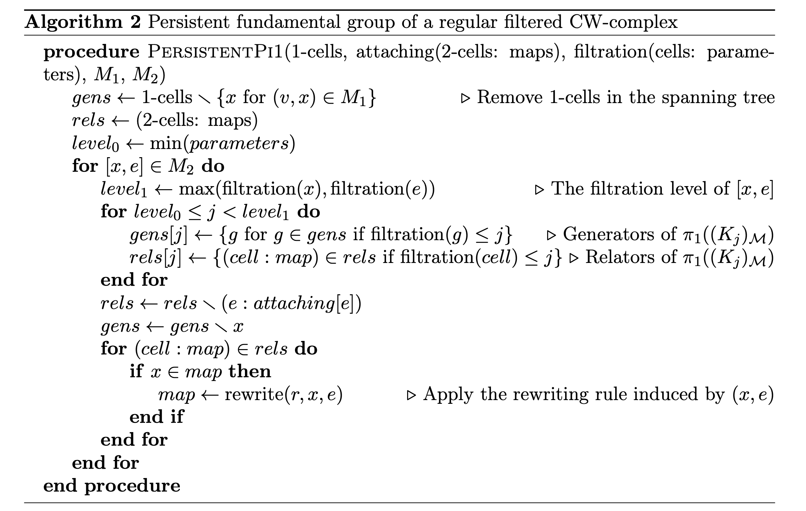Example
$S^2\vee S^1\vee S^1$ vs $S^1\times S^1$
Example
$S^2\vee S^1\vee S^1$ vs $S^1\times S^1$
Vietoris–Rips filtration $\mathrm{VR}_{\alpha}(\mathbb{X}_n)$
For $\alpha \in [1, \sqrt{2})$ and $\alpha' \in [\sqrt{2}, 2)$, \[\varphi_{\alpha, \alpha'}(x_i) = \begin{cases} x_{16} & \text{if }i = 13,14,15,16\\ x_{17} & \text{if }i = 4,8,12,17\\ 1 & \text{otherwise}.\end{cases} \]
Example
$S^2\vee S^1\vee S^1$ vs $S^1\times S^1$
Persistent fundamental group
Persistent homology
Future work
- Canonical Morse functions for Vietoris-Rips filtrations of point clouds.
- Stability to small perturbations.
- Barcode decompositions (interaction with Persistent Homology).
- Persistence of group properties.
- Implementation in GAP.
- Applications in real data.
Thanks!